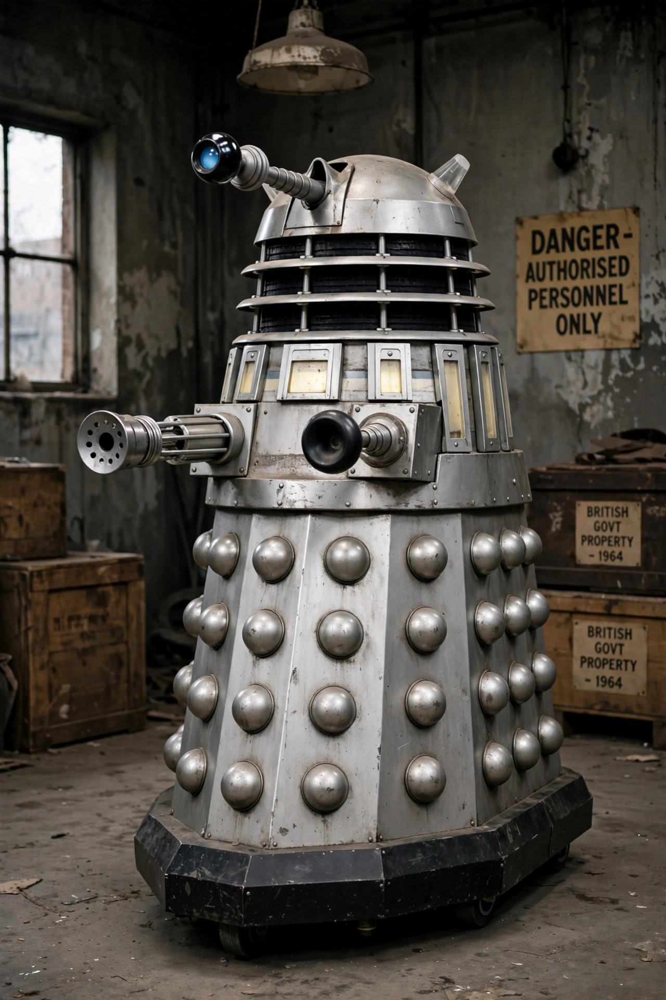

| Dalek | |
|---|---|
 | |
| First appearance | The Daleks (1963) |
| Created by | Terry Nation; designed by Raymond Cusick |
| Home planet | Skaro |
| Type | Kaled mutants in mechanical casings |
| Catchphrase | "Exterminate!" |
The Daleks (/ˈdɑːlɛks/) are a fictional extraterrestrial race of mutants principally portrayed in the British science fiction television programme Doctor Who. Created by writer Terry Nation and designed by BBC designer Raymond Cusick, they first appeared in the 1963–64 serial The Daleks and became the programme's most famous and enduring monsters.
A Dalek is a genetically engineered Kaled mutant integrated with a tank-like mechanical casing made of "dalekanium". The casing is armed with a directed-energy "gunstick" and a manipulator arm resembling a sink plunger, and topped by a rotating dome with a single mechanical eyestalk. Daleks speak in harsh, electronically distorted voices and are programmed with an unshakeable belief in their racial superiority; their battle cry is "Exterminate!" Davros, the crippled Kaled scientist who created them on war-torn Skaro, later became a recurring character.
The Daleks repeatedly attempted to conquer Earth and the universe, fighting the Time Lords in the Last Great Time War, which supposedly destroyed both races. In the revived series (2005– ), lone Daleks, the Cult of Skaro, a rebuilt Dalek Empire under a cloned Davros, and a colourful "New Paradigm" have all returned to menace the Doctor.
"Dalekmania" swept Britain in 1964–65; the Daleks appeared in two 1960s feature films starring Peter Cushing and countless toys. The word "Dalek" entered the Oxford English Dictionary, and their inhuman, fascist ideology has made them a lasting symbol of totalitarianism.
Raymond Cusick · Time Lords · Doctor Who
From Wikipedia, the free encyclopedia (recreated from memory).